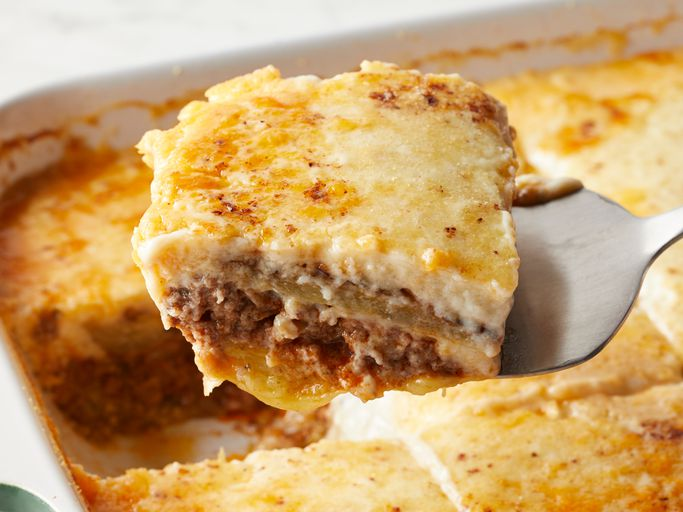

Moussaka

Description
Hash browns make a delicious crust for grab-and-go egg bites made in a muffin tin.
Ingredients
- Cooking spray
- 3 cups of frozen potatoes
- 3tbsp of butter
- 1/8 tbso of salt
- 1/8 teaspoon of black pepper
- 2 cups of shredded mexican style cheese
- 6 large eggs
- 1/4 cup of red bell pepper
- 6 slices of bacon
- Chives
Steps
- Preheat the oven
- Mix potaroes, butter, salt and black pepper
- Bake in oven 20 minutes
- Mix cheese, eggs and bell pepper
- Remove muffins from oven and top with bacon and egg mixture